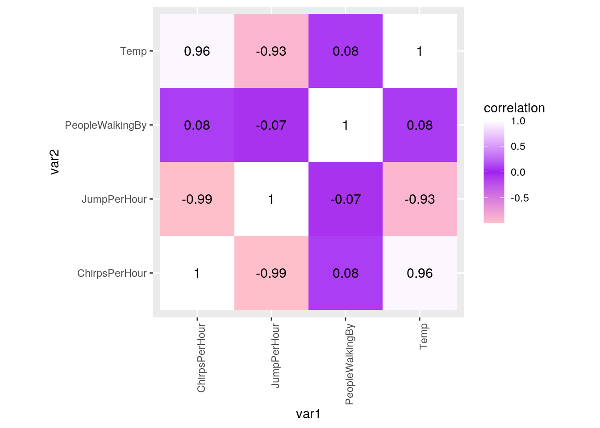

library(tidyverse)
cricket1 <- read_csv("~/cricket1.csv")
cricket2 <- read_csv("~/cricket2.csv")
glimpse(cricket1)## Rows: 76
## Columns: 4
## $ CricketNumber <dbl> 1, 2, 3, 4, 5, 6, 7, 8, 9, 10, 11, 12, 13, 14, 15, 16, …
## $ Temp <dbl> 14.0, 14.3, 14.4, 14.5, 14.6, 14.7, 14.8, 14.9, 15.0, 1…
## $ ChirpsPerHour <dbl> 64.0, 68.2, 76.3, 65.5, 72.4, 69.7, 69.6, 66.7, 79.6, 7…
## $ Rain <chr> "Y", "N", "N", "Y", "N", "N", "Y", "N", "N", "Y", "N", …glimpse(cricket2)## Rows: 76
## Columns: 4
## $ CricketNumber <dbl> 1, 2, 3, 4, 5, 6, 7, 8, 9, 10, 11, 12, 13, 14, 15, 16…
## $ Temp <dbl> 14.0, 14.3, 14.4, 14.5, 14.6, 14.7, 14.8, 14.9, 15.0,…
## $ JumpPerHour <dbl> 156.2500, 146.6276, 131.0616, 152.6718, 138.1215, 143…
## $ PeopleWalkingBy <dbl> 103, 103, 5, 54, 108, 94, 5, 55, 79, 12, 88, 90, 69, …library(ggplot2)
library(dplyr)
library(tidyverse)
library(cluster)In my first dataset (cricket1) I have 4 variables and 76 observations. In my second dataset (cricket2) I have 4 varaibles. The tao data sets include chirps and jumps per hour of 76 different crickets and it also includes the temp at which these observations were recorded and whether it was raining.I aquired my datasets from google after looking at different websites with datasets that loooked interesting. I found this dataset interesting because I.....I expect that there will be a positive correlation between the different numeric variables.
tidyr functions pivot_longer/gather and/or pivot_wider/spread).If you data sets are already tidy, be sure to use those functions somewhere else in your project. Document the process (describe in words what was done per the instructions)I used pivot longer later in the project to create a correlation heatmap of my numeric variables. I used pivot longer to get everything but the first column.
dplyr join function. If you have multiple observations on the joining variable in either dataset, fix this by collapsing via summarize. Discuss the process in words, including why you chose the join you did. Discuss which cases were dropped, if any, and potential problems with thiscricket_joined <- full_join(cricket1, cricket2)
glimpse(cricket_joined)## Rows: 76
## Columns: 6
## $ CricketNumber <dbl> 1, 2, 3, 4, 5, 6, 7, 8, 9, 10, 11, 12, 13, 14, 15, 16…
## $ Temp <dbl> 14.0, 14.3, 14.4, 14.5, 14.6, 14.7, 14.8, 14.9, 15.0,…
## $ ChirpsPerHour <dbl> 64.0, 68.2, 76.3, 65.5, 72.4, 69.7, 69.6, 66.7, 79.6,…
## $ Rain <chr> "Y", "N", "N", "Y", "N", "N", "Y", "N", "N", "Y", "N"…
## $ JumpPerHour <dbl> 156.2500, 146.6276, 131.0616, 152.6718, 138.1215, 143…
## $ PeopleWalkingBy <dbl> 103, 103, 5, 54, 108, 94, 5, 55, 79, 12, 88, 90, 69, …In the two datasets that I have there was two common numeric variables, therefore I decided to do a full_join by joining both datasets by those two common variables. There was not any rows or columns that were lost after joining the two datasets together.
dplyr functions in the service of generating summary statistics (18 pts). Use mutate at least once to generate a variable that is a function of at least one other variable. Compute at least 10 summary statistics for using summarize and summarize with group_by (18 pts). Use at least 5 unique functions inside of summarize (e.g., mean, sd). At least 2 of these should group by a categorical variable. Create one by dichotomizing a numeric if necessary. If applicable, at least 1 of these should group by two categorical variables. Strongly encouraged to create a correlation matrix with cor() on your numeric variables. Summarize/discuss all results in no more than two paragraphs (4 pts)cricket_joined %>% filter(Rain == "Y")## # A tibble: 8 x 6
## CricketNumber Temp ChirpsPerHour Rain JumpPerHour PeopleWalkingBy
## <dbl> <dbl> <dbl> <chr> <dbl> <dbl>
## 1 1 14 64 Y 156. 103
## 2 4 14.5 65.5 Y 153. 54
## 3 7 14.8 69.6 Y 144. 5
## 4 10 15.2 71 Y 141. 12
## 5 12 15.4 69.4 Y 144. 90
## 6 17 16.2 68.4 Y 146. 1
## 7 31 17.5 82.6 Y 121. 95
## 8 40 18.4 84.3 Y 119. 104cricket_joined %>% filter(Rain == "N")## # A tibble: 68 x 6
## CricketNumber Temp ChirpsPerHour Rain JumpPerHour PeopleWalkingBy
## <dbl> <dbl> <dbl> <chr> <dbl> <dbl>
## 1 2 14.3 68.2 N 147. 103
## 2 3 14.4 76.3 N 131. 5
## 3 5 14.6 72.4 N 138. 108
## 4 6 14.7 69.7 N 143. 94
## 5 8 14.9 66.7 N 150. 55
## 6 9 15 79.6 N 126. 79
## 7 11 15.3 74.5 N 134. 88
## 8 13 15.5 75.2 N 133. 69
## 9 14 15.8 75.6 N 132. 24
## 10 15 16 71.6 N 140. 14
## # … with 58 more rowscricket_joined %>% filter(Temp <= 20 & Rain == "N")## # A tibble: 48 x 6
## CricketNumber Temp ChirpsPerHour Rain JumpPerHour PeopleWalkingBy
## <dbl> <dbl> <dbl> <chr> <dbl> <dbl>
## 1 2 14.3 68.2 N 147. 103
## 2 3 14.4 76.3 N 131. 5
## 3 5 14.6 72.4 N 138. 108
## 4 6 14.7 69.7 N 143. 94
## 5 8 14.9 66.7 N 150. 55
## 6 9 15 79.6 N 126. 79
## 7 11 15.3 74.5 N 134. 88
## 8 13 15.5 75.2 N 133. 69
## 9 14 15.8 75.6 N 132. 24
## 10 15 16 71.6 N 140. 14
## # … with 38 more rowscricket_joined %>% arrange(desc(JumpPerHour))## # A tibble: 76 x 6
## CricketNumber Temp ChirpsPerHour Rain JumpPerHour PeopleWalkingBy
## <dbl> <dbl> <dbl> <chr> <dbl> <dbl>
## 1 1 14 64 Y 156. 103
## 2 4 14.5 65.5 Y 153. 54
## 3 8 14.9 66.7 N 150. 55
## 4 2 14.3 68.2 N 147. 103
## 5 17 16.2 68.4 Y 146. 1
## 6 12 15.4 69.4 Y 144. 90
## 7 7 14.8 69.6 Y 144. 5
## 8 6 14.7 69.7 N 143. 94
## 9 10 15.2 71 Y 141. 12
## 10 15 16 71.6 N 140. 14
## # … with 66 more rowscricket_joined %>% arrange(PeopleWalkingBy)## # A tibble: 76 x 6
## CricketNumber Temp ChirpsPerHour Rain JumpPerHour PeopleWalkingBy
## <dbl> <dbl> <dbl> <chr> <dbl> <dbl>
## 1 17 16.2 68.4 Y 146. 1
## 2 39 18.3 84.3 N 119. 1
## 3 42 18.6 88.3 N 113. 4
## 4 3 14.4 76.3 N 131. 5
## 5 7 14.8 69.6 Y 144. 5
## 6 24 16.9 85.1 N 118. 5
## 7 30 17.4 84.3 N 119. 7
## 8 61 20.5 93.4 N 107. 7
## 9 22 16.7 84 N 119. 8
## 10 10 15.2 71 Y 141. 12
## # … with 66 more rowscricket_joined %>% select(Temp, "ChirpsPerHour", "JumpPerHour")## # A tibble: 76 x 3
## Temp ChirpsPerHour JumpPerHour
## <dbl> <dbl> <dbl>
## 1 14 64 156.
## 2 14.3 68.2 147.
## 3 14.4 76.3 131.
## 4 14.5 65.5 153.
## 5 14.6 72.4 138.
## 6 14.7 69.7 143.
## 7 14.8 69.6 144.
## 8 14.9 66.7 150.
## 9 15 79.6 126.
## 10 15.2 71 141.
## # … with 66 more rowscricket_joined %>% group_by(PeopleWalkingBy)## # A tibble: 76 x 6
## # Groups: PeopleWalkingBy [54]
## CricketNumber Temp ChirpsPerHour Rain JumpPerHour PeopleWalkingBy
## <dbl> <dbl> <dbl> <chr> <dbl> <dbl>
## 1 1 14 64 Y 156. 103
## 2 2 14.3 68.2 N 147. 103
## 3 3 14.4 76.3 N 131. 5
## 4 4 14.5 65.5 Y 153. 54
## 5 5 14.6 72.4 N 138. 108
## 6 6 14.7 69.7 N 143. 94
## 7 7 14.8 69.6 Y 144. 5
## 8 8 14.9 66.7 N 150. 55
## 9 9 15 79.6 N 126. 79
## 10 10 15.2 71 Y 141. 12
## # … with 66 more rowscricket_joined %>% mutate(Rain2 = recode(Rain, Y = "Yes", N = "No"))## # A tibble: 76 x 7
## CricketNumber Temp ChirpsPerHour Rain JumpPerHour PeopleWalkingBy Rain2
## <dbl> <dbl> <dbl> <chr> <dbl> <dbl> <chr>
## 1 1 14 64 Y 156. 103 Yes
## 2 2 14.3 68.2 N 147. 103 No
## 3 3 14.4 76.3 N 131. 5 No
## 4 4 14.5 65.5 Y 153. 54 Yes
## 5 5 14.6 72.4 N 138. 108 No
## 6 6 14.7 69.7 N 143. 94 No
## 7 7 14.8 69.6 Y 144. 5 Yes
## 8 8 14.9 66.7 N 150. 55 No
## 9 9 15 79.6 N 126. 79 No
## 10 10 15.2 71 Y 141. 12 Yes
## # … with 66 more rowscricket_joined %>% summarize_all(n_distinct)## # A tibble: 1 x 6
## CricketNumber Temp ChirpsPerHour Rain JumpPerHour PeopleWalkingBy
## <int> <int> <int> <int> <int> <int>
## 1 76 75 66 2 66 54cricket_joined %>% filter(Rain == "N") %>% filter(PeopleWalkingBy >
100)## # A tibble: 13 x 6
## CricketNumber Temp ChirpsPerHour Rain JumpPerHour PeopleWalkingBy
## <dbl> <dbl> <dbl> <chr> <dbl> <dbl>
## 1 2 14.3 68.2 N 147. 103
## 2 5 14.6 72.4 N 138. 108
## 3 23 16.8 80.3 N 125. 112
## 4 33 17.7 84.3 N 119. 102
## 5 34 17.8 81.2 N 123. 101
## 6 35 17.9 83.3 N 120. 112
## 7 36 18 84.9 N 118. 101
## 8 44 18.8 86.8 N 115. 112
## 9 58 20.2 91.3 N 110. 107
## 10 62 20.6 94.1 N 106. 105
## 11 63 20.7 98.2 N 102. 115
## 12 64 20.8 98.6 N 101. 111
## 13 68 21.2 96 N 104. 105cricket_joined %>% summarize_all(sd)## # A tibble: 1 x 6
## CricketNumber Temp ChirpsPerHour Rain JumpPerHour PeopleWalkingBy
## <dbl> <dbl> <dbl> <dbl> <dbl> <dbl>
## 1 22.1 2.27 9.48 NA 14.1 36.9cricket_joined %>% summarize_all(mean)## # A tibble: 1 x 6
## CricketNumber Temp ChirpsPerHour Rain JumpPerHour PeopleWalkingBy
## <dbl> <dbl> <dbl> <dbl> <dbl> <dbl>
## 1 38.5 18.2 85.4 NA 119. 63.8cricket_joined %>% summarize_all(var)## # A tibble: 1 x 6
## CricketNumber Temp ChirpsPerHour Rain JumpPerHour PeopleWalkingBy
## <dbl> <dbl> <dbl> <dbl> <dbl> <dbl>
## 1 488. 5.15 89.8 NA 199. 1363.cricket_joined %>% summarize_all(min)## # A tibble: 1 x 6
## CricketNumber Temp ChirpsPerHour Rain JumpPerHour PeopleWalkingBy
## <dbl> <dbl> <dbl> <chr> <dbl> <dbl>
## 1 1 14 64 N 99.7 1cricket_joined %>% summarize_all(max)## # A tibble: 1 x 6
## CricketNumber Temp ChirpsPerHour Rain JumpPerHour PeopleWalkingBy
## <dbl> <dbl> <dbl> <chr> <dbl> <dbl>
## 1 76 22 100. Y 156. 115cricket_joined %>% filter(Temp > 16) %>% summarize(sd(ChirpsPerHour,
na.rm = T)) %>% group_by(Rain = "N")## # A tibble: 1 x 2
## # Groups: Rain [1]
## `sd(ChirpsPerHour, na.rm = T)` Rain
## <dbl> <chr>
## 1 6.74 Ncricket_joined %>% filter(Temp > 16) %>% summarize(mean(ChirpsPerHour,
na.rm = T)) %>% group_by(Rain = "N")## # A tibble: 1 x 2
## # Groups: Rain [1]
## `mean(ChirpsPerHour, na.rm = T)` Rain
## <dbl> <chr>
## 1 88.9 Ncricket_joined %>% group_by(Rain == "N") %>% filter(PeopleWalkingBy >
100) %>% summarize(mean(JumpPerHour), na.rm = T)## # A tibble: 2 x 3
## `Rain == "N"` `mean(JumpPerHour)` na.rm
## <lgl> <dbl> <lgl>
## 1 FALSE 137. TRUE
## 2 TRUE 117. TRUEcricket_joined %>% select(ChirpsPerHour, JumpPerHour) %>% cor %>%
round(3)## ChirpsPerHour JumpPerHour
## ChirpsPerHour 1.000 -0.992
## JumpPerHour -0.992 1.000cricket_joined %>% select(ChirpsPerHour, Temp) %>% cor %>% round(3)## ChirpsPerHour Temp
## ChirpsPerHour 1.000 0.956
## Temp 0.956 1.000cricket_joined %>% select(JumpPerHour, Temp) %>% cor %>% round(3)## JumpPerHour Temp
## JumpPerHour 1.000 -0.931
## Temp -0.931 1.000The standar deviation of chirps per hour when temperature is greater than 16 and rain is equal to "N" is 6.738. The mean value of chirps per hour when temperature is greater than 16 and rain is equal to "N" is 88.93. Lastly, the mean value of jumps per hour when rain is qual to "N" and people walking by is greater than 100 is 117.486. The correlation between chirps per hour and jumps per hour is -.992. The correlation between chirps per hour and temperature is .956. The correlation between jumps per hour and temperature is -.931.
ggplot(data = cricket_joined, aes(x = ChirpsPerHour, y = JumpPerHour)) + geom_point(color="Black") + geom_line(color="Purple")ggplot(data = cricket_joined, aes(x = ChirpsPerHour, y = JumpPerHour)) + geom_point(size=4, aes(color = Temp))ggplot(cricket_joined, aes(Temp))+ geom_bar(aes(y=JumpPerHour,fill=Rain), stat="summary", fun=mean) + theme(axis.text = element_text(size=14))cricket_cor <- cricket_joined %>% select_if(is.numeric) %>% column_to_rownames(var="CricketNumber")
cricket_cor2 <- cricket_cor %>% cor
tidycor <- cricket_cor2 %>% as.data.frame %>% rownames_to_column("var1") %>%
pivot_longer(-1,names_to="var2",values_to="correlation")
tidycor %>% ggplot(aes(var1,var2,fill=correlation)) + geom_tile() +
scale_fill_gradient2(low="pink",mid="purple", high="white") + geom_text(aes(label=round(correlation,2)),color = "black", size = 4)+ #overlay values
theme(axis.text.x = element_text(angle = 90, hjust=1))+
coord_fixed() 
By looking at my correlation heatmap we can clearly see that there is a positive correlation between chirps per hour and temperature.There is a highly negative corelation between jumps per hour and chirps per hour, as well as temperature and jump per hour. People walking by and jump per hour are slighly negatively correlated. People walking by and chirps per hour are slighly positviely correlated.
pam_dat <- cricket_joined %>% select(JumpPerHour, ChirpsPerHour)
sil_width <- vector()
for (i in 2:10) {
pam_fit <- pam(pam_dat, k = i)
sil_width[i] <- pam_fit$silinfo$avg.width
}
ggplot() + geom_line(aes(x = 1:10, y = sil_width)) + scale_x_continuous(name = "k",
breaks = 1:10)# pam2 <-cricket_joined %>% select(-Rain) %>%
# select(-CricketNumber) %>% scale %>% pam(3) pam2
final <- cricket_joined %>% select(-Rain) %>% select(-CricketNumber) %>%
scale %>% as.data.frame
pam2 <- final %>% pam(3)
final <- final %>% mutate(cluster = as.factor(pam2$clustering))
ggplot(final, aes(x = JumpPerHour, y = ChirpsPerHour, color = cluster)) +
geom_point()library(GGally)
ggpairs(final, columns = 1:4, aes(color = cluster))plot(pam2, which = 2)Distribution of cluster 3 is highest in all of the 4 different numberic variables.The overall correlation for chirps per hour and temp is highly correlated. Based on average sillhouette width =.37 we can say that the structure is weak and could be artificial.
...